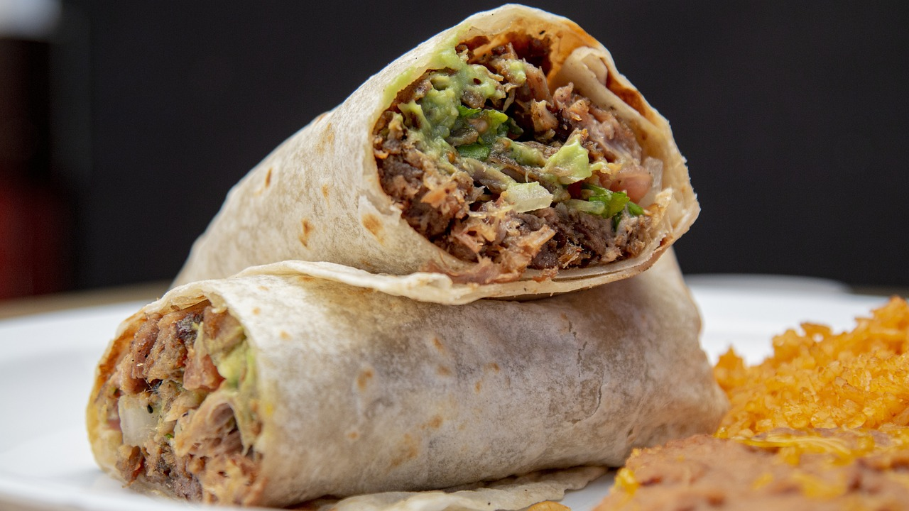

Burrito Recipe: A Flavor-Packed Roll of Comfort


There's nothing quite like sinking your teeth into a burrito. It’s a complete meal wrapped in a warm tortilla—comforting, hearty, and bursting with flavor. For me, burritos are the ultimate expression of creativity in the kitchen. You can customize them endlessly, packing them with your favorite fillings, from spicy meats to fresh veggies, creamy beans, and tangy salsa. This recipe is inspired by my love for bold, vibrant flavors and the satisfying balance of textures that a burrito offers. Whether you’re making these for a cozy dinner at home or meal-prepping for the week, this recipe will become a go-to in your rotation.
- 4 large flour tortillas
- 2 cups cooked white or brown rice
- 1 cup black beans (cooked or canned, rinsed and drained)
- 1 lb cooked chicken, beef, or your preferred protein (shredded or diced)
- 1 cup shredded cheese (cheddar, Monterey Jack, or your favorite blend)
- 1 cup fresh salsa (store-bought or homemade)
- 1 cup guacamole (store-bought or homemade)
- ½ cup sour cream or Greek yogurt
- 1 cup chopped lettuce or mixed greens
- ½ cup diced tomatoes
- Additional Ingredients: olive oil, chili powder, cumin, smoked paprika, garlic powder, salt and pepper.
-
Prep Your Protein: Heat a skillet over medium heat and add the olive oil. Toss your cooked protein in the pan with chili powder, cumin, smoked paprika, garlic powder, salt, and pepper. Stir for 2-3 minutes until the flavors meld together. Remove from heat and set aside.
- Warm the Tortillas: Heat the flour tortillas in a dry skillet over medium heat for about 30 seconds on each side, just until pliable. Alternatively, wrap them in foil and warm them in a low oven.
-
Assemble the Burrito: Lay a tortilla flat on a clean surface. Spread a spoonful of guacamole and sour cream in the center, leaving room around the edges. Layer on the rice, beans, seasoned protein, shredded cheese, salsa, lettuce, and diced tomatoes. To roll your burrito, fold the sides of the tortilla inward over the filling, then tightly roll it up from the bottom. Make sure it’s snug to keep all the delicious ingredients inside.
-
Serve or Sear: You can serve your burrito as-is or take it up a notch by searing it in a hot skillet for 1-2 minutes on each side to give it a crispy, golden exterior.
Every burrito tells a story. This one reminds me of my first trip to a local food truck festival, where I discovered the beauty of a perfectly balanced burrito. The way the flavors and textures come together in every bite—it’s magic.
The beauty of this recipe is its adaptability. Whether you’re whipping up a weeknight dinner or hosting a casual get-together, burritos are always a crowd-pleaser. And if you’re anything like me, you’ll find yourself experimenting with different fillings and sauces every time.